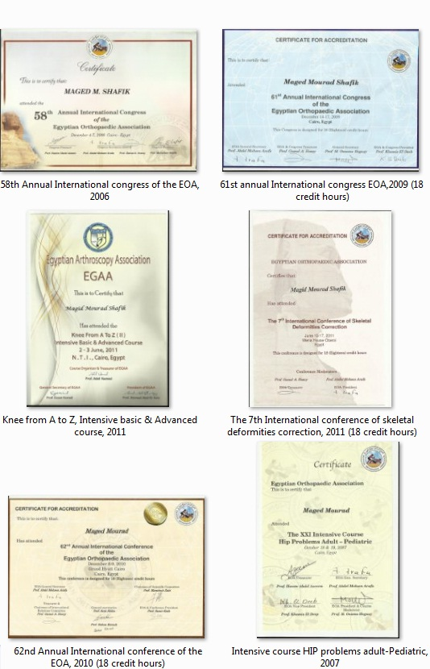

بعض الشهادات و الكورسات المختلفة الحاصل عليها

العمل الحالى كطبيب جراحة عظام بمستشفى الساحل بشبرا
العمل الحالى كطبيب جراح بمستشفى التامين الصحى
العمل كطبيب جراحة عظام بمستشفى قوات امن شبرا
العمل كطبيب جراحة بمستشفى الراعى الصالح ببنها
العمل كطبيب جراحة عظام بمستشفى برج مينا
العمل كطبيب جاحة عظام بمستشفى سان بيتر التخصصى
العمل مع ا.د/مينا سمعان استشارى جراحة عظام
العمل مع ا.د/سمير زيتونى استشارى جراحة العظام بانجلترا
العيادات الخيرية المتعددة:مارمرقص كليوباترا – المحبة بالزيتون – العذراء مريم بشبين – العذراء مريم بالقناطر الخيرية
• 1st aid & initial care of trauma at police hospital at agoza
• XXI intensive course_Hip problems Adult & pediatric 2007
• The 7th international conference of skeletal deformities correction (18 credit hours,2011)
• 1st aid & initial care of trauma at police hospital at El Agoza 2004
• 58th annual international congress of the EOA,2006
• 62nd annual international conference of the EOA,2010(18 credit hours)
• 61st annual international congress EOA.2009(18 credit hours)
• Knee from A to Z ,intensive basic & Advanced course,2011